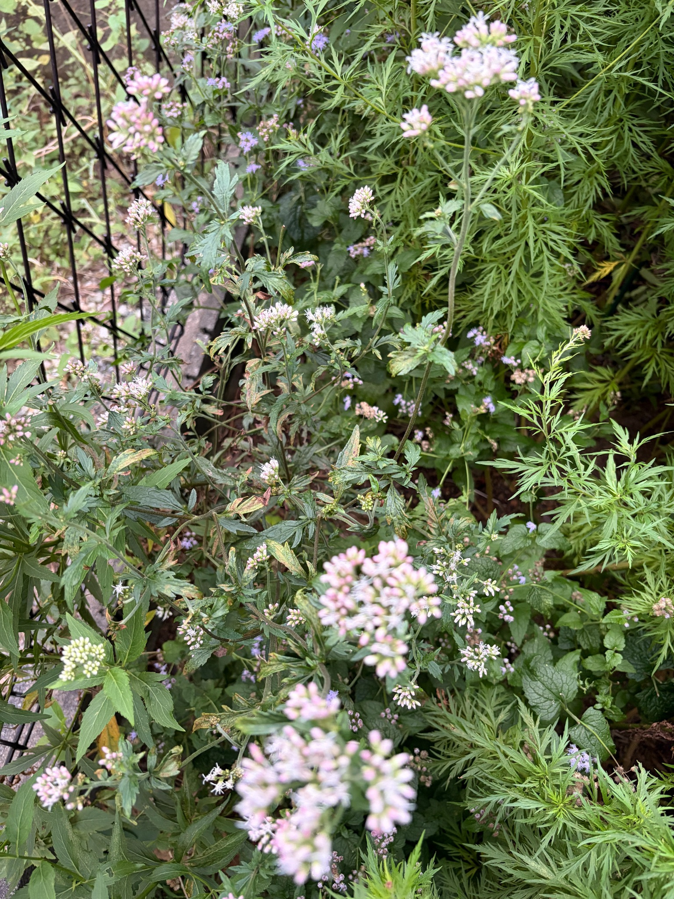
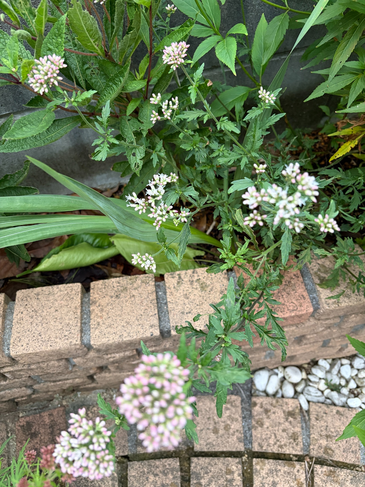

2026/10/04 わが家の観察記録
2026年10月4日、庭に地植えしたキクバフジバカマ（原種系）の様子を記録しました。9月22日には、細い茎の先々にまとまった蕾がつき、淡いピンク色が目立つようになっていました。それから12日がたち、今回は複数の花房で花が開き、ピンク色の蕾の間から白い糸状の部分が広がっています。
前回は、蕾のふくらみや色づきが目を引く状態でしたが、今回は開いた花のふんわりとした姿も見られるようになりました。閉じた蕾だけがまとまっている花房と、白い糸状の部分が目立つ花房が混在し、枝先ごとに開花の進み具合が異なっています。すべての花房が咲き揃った状態ではなく、まだこれから開く蕾も数多く残っています。
株のあちこちから細い茎が伸び、その先に大小の花房がついています。高く伸びた枝先だけでなく、中ほどや低い位置の枝にも花房があり、花と蕾が高さを違えて広がっています。上の方から順番に一様に咲いているわけではなく、低い位置にも開いた花が見られます。
ひとつの花房を見ても、咲き具合は揃っていません。白い糸状の部分を伸ばした花のすぐ隣に、先端がピンク色の閉じた蕾が残っています。蕾が密に集まった丸みのある部分と、開いた花が外へ広がる部分が同じ花房の中にあり、開花が少しずつ進んでいる様子が分かります。
まだ開いていない蕾は、細長い形になり、先端の淡いピンク色がはっきりしています。花房によっては、付け根側に緑色や白っぽい色が残り、その先にピンク色が乗っています。小さな緑色の蕾がまとまった房もあり、色づいた蕾ばかりの房とは印象が異なります。
開花した部分では、白からごく淡いピンク色に見える糸状の部分が、蕾のまとまりから外へ伸びています。閉じた蕾の輪郭がはっきりした花房に比べ、開いた花のある花房は輪郭がやわらかくなり、ふんわりとした姿になっています。花房全体が白く覆われるほど咲いたものばかりではなく、ピンク色の蕾がまだよく見える状態です。
庭の奥側まで写した写真では、手前と奥の枝先に花房が点在しています。大きくまとまった花房に加え、細い枝先には小さな花房もつき、それぞれに蕾や開いた花が見られます。枝がさまざまな方向へ伸びているため、花房同士にも間隔があり、一面に花が密集するというより、枝先ごとの花を見られる姿です。

レンガの縁に沿った部分では、中央より左側の花房に白い糸状の部分が広がり、その周囲に閉じた蕾が残っています。一方、上の方の花房にはピンク色の蕾がまとまっており、近くにある枝でも咲き具合に違いがあります。少し下へ伸びた枝先にも花房がつき、株の上部だけでなく、庭の縁に近い位置でも花と蕾を楽しめるようになっています。

花房を支える茎は細く、立ち上がるものや斜めに伸びるものが入り混じっています。茎の途中にも枝分かれがあり、その先に小さな蕾のまとまりが見られます。9月22日に記録した、茎の高さや伸びる方向の違いが、今回は花房の位置や咲き具合の違いとしても表れています。
葉には、キクバらしい深い切れ込みが残っています。ただ、葉の状態は一様ではなく、緑色を保っている葉のほかに、黄色っぽいまだら模様や褐色になった部分のある葉も見られます。縁が傷んだ葉や、穴の開いた葉、反りや縮れのある葉もあり、花の開き具合とともに葉の様子も記録しておきます。
9月22日からの変化で最も目立つのは、ふくらんだ蕾を眺める段階から、開いた花と残っている蕾を同時に眺められる段階へ進んだことです。枝先ごと、花房ごと、さらに同じ花房の中でも咲き具合が異なり、少しずつ開花が進んでいます。
10月4日は、複数の花房で開花している一方、ピンク色の蕾や小さな緑色の蕾も残っている状態です。満開と呼ぶにはまだ蕾が目立ちますが、白い糸状の花が加わったことで、9月22日とは違うやわらかな表情になりました。今後も、残っている蕾が開いていく様子と、花房ごとの変化を引き続き記録していきます。